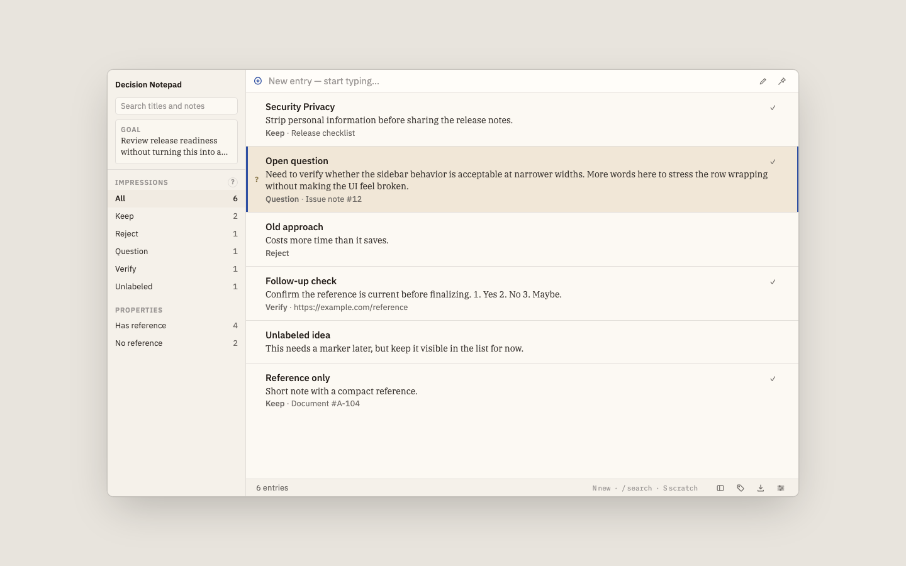
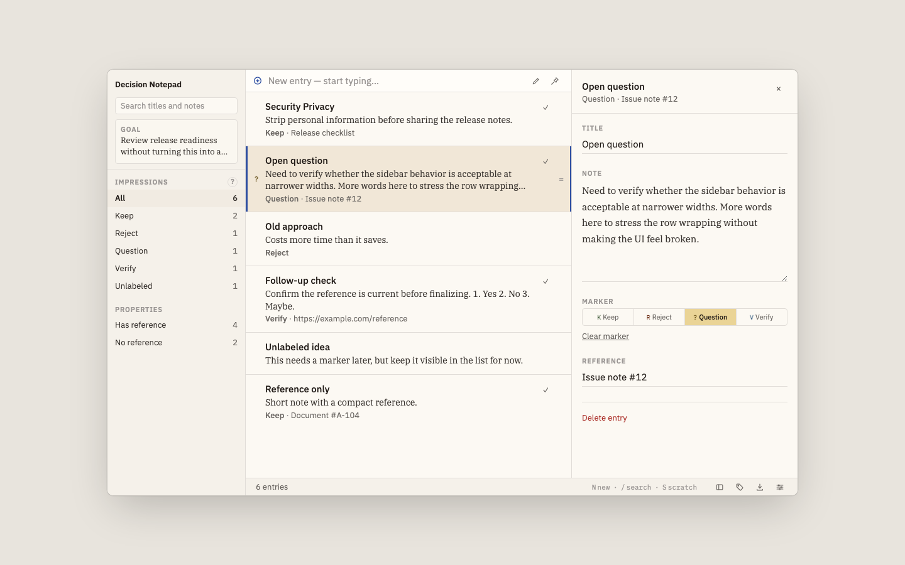
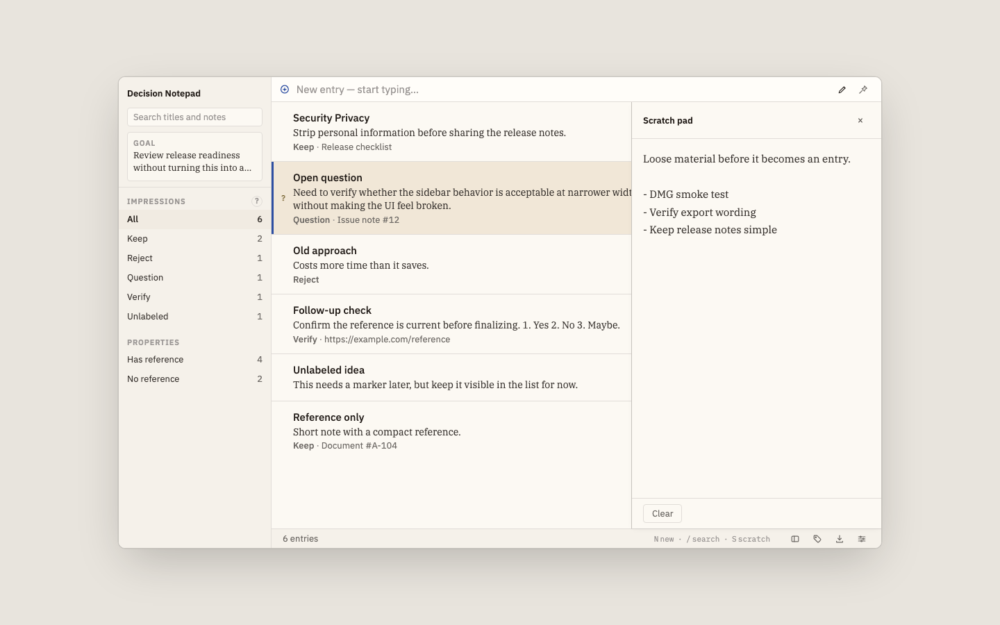
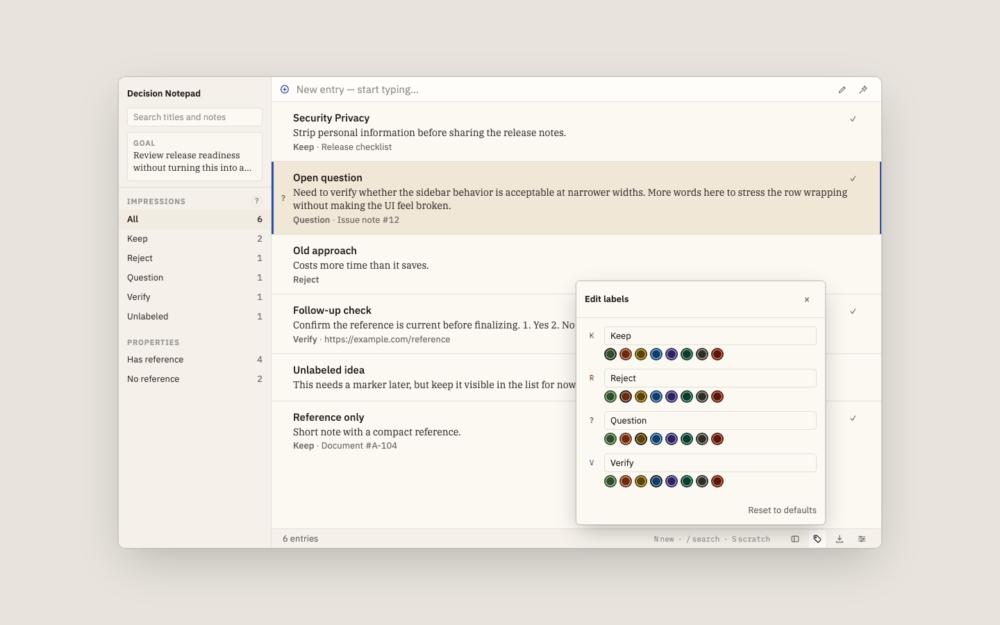
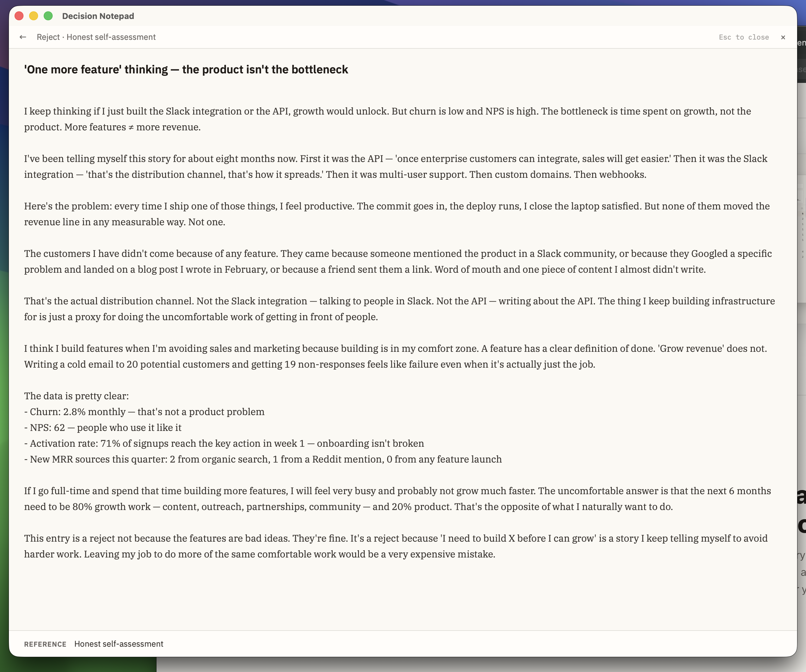
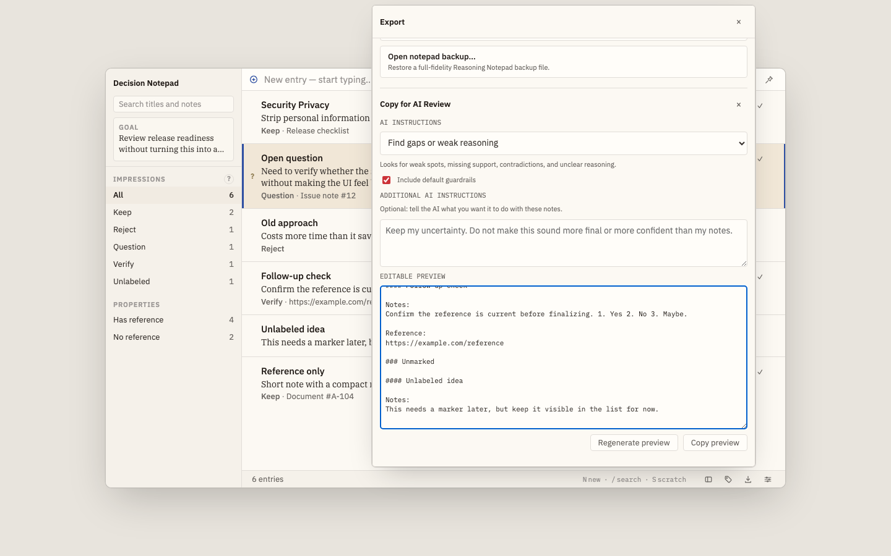
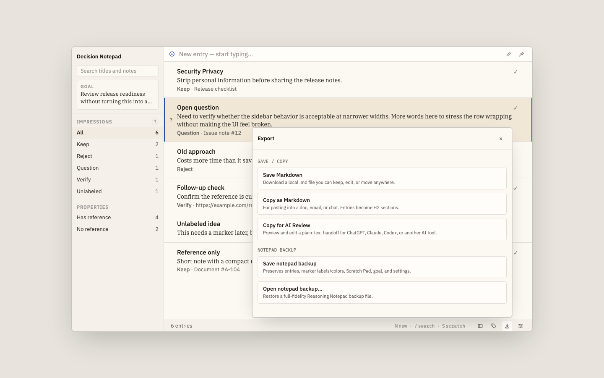
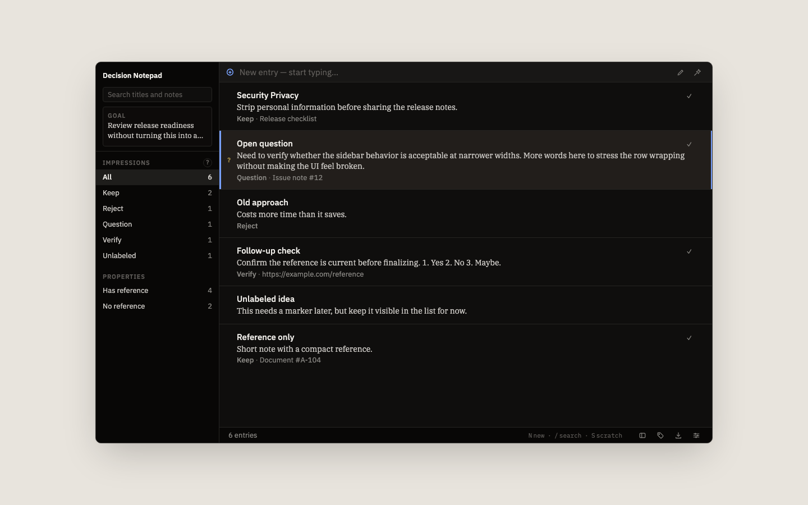

I built Decision Notepad because decisions evaporate. You compare five candidates, pick one, and a month later can't remember why you ruled out the other four. This is a small desktop app that keeps the trail — one note per candidate, a marker, a reference, and a clean Markdown export when you're done.

Four markers to keep the trail of why you decided what you decided.
Capture
Type a new entry and instantly start capturing. Each entry holds a title, a note, an optional reference, and a marker — all the context you need to revisit any thought clearly.

Scratch Pad
Not ready to commit an idea to an entry? The scratch pad is always one keystroke away — a loose workspace for fragments, half-formed hunches, and things you want to remember but aren't sure count yet.

Markers
Mark each entry as Keep, Reject, Question, or Verify. Filter by marker to see what you've decided, what's uncertain, and what still needs work. Customize colors to match how you think.

Focus View
Open any entry into a full-screen notes view. Just the title, the note, and the reference — nothing else competing for your attention. Esc to return.

AI Review
Copy your notepad to an AI with a single click. Choose from built-in instructions like "Find gaps or weak reasoning" — or write your own. Get an outside perspective on your thinking before you commit to a direction.

Export
Export a full notepad backup or copy a structured preview for sharing. Every export is clean, readable, and ready to paste anywhere.

Everything else
Small, considered details that make the app feel right.
Search titles and notes across all entries. Results update as you type — no waiting.
Filter by marker or by whether an entry has a reference. See exactly what you decided and what's still open.
Set a goal for your notepad session — visible in the sidebar to keep you anchored to what actually matters.
Optional timestamp display shows when each entry was created — useful for longer or multi-day decision sessions.
Save a full backup of your notepad anytime. Restore it later — no account, no cloud, no surprises.
Keep the window floating above other apps while you research, read, or discuss. Think alongside your work.
What an entry looks like
Entries aren't just notes. They're structured thinking — a title that names the idea, a note that unpacks it honestly, a marker that records your verdict, and a reference that anchors it to reality. This is a real entry, written by someone deciding whether to go full-time on their product.
I keep thinking if I just built the Slack integration or the API, growth would unlock. But churn is low and NPS is high. The bottleneck is time spent on growth, not the product. More features ≠ more revenue.
I've been telling myself this story for about eight months now. First it was the API — 'once enterprise customers can integrate, sales will get easier.' Then it was the Slack integration — 'that's the distribution channel, that's how it spreads.' Then it was multi-user support. Then custom domains. Then webhooks.
The customers I have didn't come because of any feature. They came because someone mentioned the product in a Slack community, or because they Googled a specific problem and landed on a blog post I wrote in February, or because a friend sent them a link. Word of mouth and one piece of content I almost didn't write.
The data is pretty clear:
This entry is a reject not because the features are bad ideas. They're fine. It's a reject because 'I need to build X before I can grow' is a story I keep telling myself to avoid harder work. Leaving my job to do more of the same comfortable work would be a very expensive mistake.
Dark Mode
Full dark mode — switch between light and dark from settings. Your entries look just as clear at midnight as they do at noon.

In practice
Whether you're evaluating a job offer, assessing a business risk, or working through a major life choice — Decision Notepad keeps every consideration organized and visible.
Free to download. No account. No sync. Just your thoughts.
↓ Download Decision NotepadmacOS · Apple Silicon · v0.1.0 · All releases